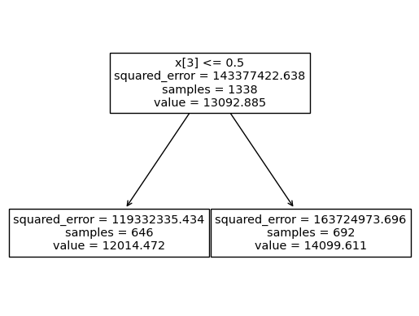

import numpy as np
import pandas as pd
import matplotlib.pyplot as plt
import sklearn.tree
import sklearn.ensemble
#---#
import warnings
warnings.filterwarnings('ignore')12wk-044: Medical Cost / 랜덤포레스트
1. 강의영상
2. Imports
3. Data
df_train = pd.read_csv('https://raw.githubusercontent.com/guebin/MP2023/main/posts/insurance.csv')
df_train| age | sex | bmi | children | smoker | region | charges | |
|---|---|---|---|---|---|---|---|
| 0 | 19 | female | 27.900 | 0 | yes | southwest | 16884.92400 |
| 1 | 18 | male | 33.770 | 1 | no | southeast | 1725.55230 |
| 2 | 28 | male | 33.000 | 3 | no | southeast | 4449.46200 |
| 3 | 33 | male | 22.705 | 0 | no | northwest | 21984.47061 |
| 4 | 32 | male | 28.880 | 0 | no | northwest | 3866.85520 |
| ... | ... | ... | ... | ... | ... | ... | ... |
| 1333 | 50 | male | 30.970 | 3 | no | northwest | 10600.54830 |
| 1334 | 18 | female | 31.920 | 0 | no | northeast | 2205.98080 |
| 1335 | 18 | female | 36.850 | 0 | no | southeast | 1629.83350 |
| 1336 | 21 | female | 25.800 | 0 | no | southwest | 2007.94500 |
| 1337 | 61 | female | 29.070 | 0 | yes | northwest | 29141.36030 |
1338 rows × 7 columns
4. Bagging의 단점
A. Baggin으로 적합
# step1
X = pd.get_dummies(df_train.loc[:,'age':'region'],drop_first=True)
y = df_train['charges']
# step2
predictr = sklearn.ensemble.BaggingRegressor()
# step3
predictr.fit(X,y)
# step4 -- pass BaggingRegressor()In a Jupyter environment, please rerun this cell to show the HTML representation or trust the notebook.
On GitHub, the HTML representation is unable to render, please try loading this page with nbviewer.org.
BaggingRegressor()
B. 결과 시각화
- 관찰: 트리들의 다양하지 않다.
sklearn.tree.plot_tree(
predictr.estimators_[4],
feature_names=X.columns,
max_depth=1
);
fig = plt.gcf()
fig.set_dpi(200)
C. 우수성 vs 다양성
- 다양성이 없는게 왜 문제인가?
- 기존의 의사결정나무: 데이터에 최적화된 똑똑한 하나의 트리를 발견
- Bagging: “데이터에 최적화”를 희생하고 “다양성”을 확보. 즉 똑똑한 하나의 트리대신에 모자란 여러개의 트리를 생성하고 힘을 합침.
- 우수성 vs 다양성 – 우수하지만 비슷한 생각을 가진 10명의 인재 vs 평범하지만 다양한 의견을 가진 10명의 인재
- 뭐가 좋을까요?
- 김용대 교수님의 통찰! https://biz.heraldcorp.com/view.php?ud=20170802000434
Note
기계학습 방법론 중 앙상블이라는 방법이 있다. 앙상블이란 음악에서 여러 명의 연주자에 의한 합주 또는 합창을 의미하는데, 다양한 의견들을 조화롭게 결합하는 방법을 의미하기도 한다. 기계학습에서 앙상블이란 같은 데이터를 여러 개의 기계학습 알고리즘들이 분석하여 각자 지식을 습득한 후 이를 결합하여 새롭고 유용한 지식을 창출하는 방법이다.
앙상블 방법론에 숨어 있는 매우 흥미롭고 이해하기 어려운 과학적 현상으로는, 앙상블의 성능을 높이기 위해서는 개별 알고리즘들의 성능보다는 알고리즘들의 다양성이 훨씬 중요하다는 것이다. 즉, 주어진 문제에 대해서 모두 비슷한 답을 주는 성능이 우수한 10개의 알고리즘보다는 성능은 좀 떨어지지만 다양한 답을 제공하는 10개의 알고리즘이 앙상블에는 더 효율적이라는 것이다. 이를 인간 사회에 적용하면, 비슷한 생각을 가진 우수한 10명의 인재보다는 다양한 의견을 가진 평범한 10명의 의견이 훨씬 유용할 수 있다는 것이다.
- 요약
- 통찰: Bagging은 의사결정나무보다 다양성을 추구하는 알고리즘이다.
- 문제점: 하지만 \({\bf X}\)가 고차원인 상황에서 배깅만으로는 그렇게 다양한 트리가 나오지 않는다. (모든 트리가 천편일륜적으로 흡연여부가 보험료에 미치는 영향을 우선적으로 연구한다)
- 소망: 혹시 어떤 괴짜는 흡연여부를 연구하지 않고 다른 변수들을 최우선으로 연구하는 연구자가 있다면 좋겠는데.. (그러면 트리가 다양해질텐데)
5. 랜덤포레스트
A. 개념
- RandomForeset = Bagging + max_feature=??
- 엄밀한 수식은 아닙니다.
- 슈도-알고리즘의 비교
## Bagging
trees = []
for i in range(100):
tree = sklearn.tree.DecisionTreeRegressor()
X_sample,y_sample = boostrap(X,y) # 매순간 샘플바뀜
tree.fit(X_sample,y_sample) # 일부 샘플만으로 적합
trees.append(tree) # 학습한 나무를 저장
yhat = ensemble(trees) # 여러개의 나무를 종합하여 하나의 예측값을 만들어냄 (합주)
## RandomForeset
forest = []
for i in range(100):
tree = sklearn.tree.DecisionTreeRegressor(max_feature=1) # 매순간 설명변수 바뀜
X_sample,y_sample = boostrap(X,y) # 매순간 샘플바뀜
tree.fit(X_sample,y_sample) # 일부설명변수, 일부샘플만으로 적합
forest.append(tree) # 학습한 나무를 숲에 저장
yhat = ensemble(forest) # 여러개의 나무를 종합하여 하나의 예측값을 만들어냄 (합주) B. 일단 적합
# step1 -- pass
# step2
predictr = sklearn.ensemble.RandomForestRegressor(
max_depth=1,
max_features=1/3
)
# step3
predictr.fit(X,y)
# step4 RandomForestRegressor(max_depth=1, max_features=0.3333333333333333)In a Jupyter environment, please rerun this cell to show the HTML representation or trust the notebook.
On GitHub, the HTML representation is unable to render, please try loading this page with nbviewer.org.
RandomForestRegressor(max_depth=1, max_features=0.3333333333333333)
주의1:
max_feature=1은 1개의 feature를 고려한다는 의미이고,max_feature=1.0은 100%의 feature를 고려한다는 의미이다.
주의2:
max_feature=1.0이 default값이며 이 값을 사용한다면 “RandomForest = Bagging” 이다. (아래 ref 참고)
C. 시각화
sklearn.tree.plot_tree(
predictr.estimators_[5],
feature_names=X.columns,
max_depth=1
);
6. 랜덤포레스트 재현
A. random_state 추출
- 첫번째 트리 - random_state 확인
predictr.estimators_[0]DecisionTreeRegressor(max_depth=1, max_features=0.3333333333333333,
random_state=528585471)In a Jupyter environment, please rerun this cell to show the HTML representation or trust the notebook. On GitHub, the HTML representation is unable to render, please try loading this page with nbviewer.org.
DecisionTreeRegressor(max_depth=1, max_features=0.3333333333333333,
random_state=528585471)- 첫번째 트리의 random_state가 저장된 곳
predictr.estimators_[0].random_state528585471- 각 나무들의 random_state 추출
rs = [tree.random_state for tree in predictr.estimators_]B. forest 생성
my_forest = [sklearn.tree.DecisionTreeRegressor(max_depth=1,max_features=1/3,random_state=r) for r in rs]my_forest[-1]DecisionTreeRegressor(max_depth=1, max_features=0.3333333333333333,
random_state=838055637)In a Jupyter environment, please rerun this cell to show the HTML representation or trust the notebook. On GitHub, the HTML representation is unable to render, please try loading this page with nbviewer.org.
DecisionTreeRegressor(max_depth=1, max_features=0.3333333333333333,
random_state=838055637)predictr.estimators_[-1]DecisionTreeRegressor(max_depth=1, max_features=0.3333333333333333,
random_state=838055637)In a Jupyter environment, please rerun this cell to show the HTML representation or trust the notebook. On GitHub, the HTML representation is unable to render, please try loading this page with nbviewer.org.
DecisionTreeRegressor(max_depth=1, max_features=0.3333333333333333,
random_state=838055637)C. 부스트랩 샘플생성
- 저장된 부스트랩 샘플을 확보하자. – 실패
predictr.estimators_samples_AttributeError: 'RandomForestRegressor' object has no attribute 'estimators_samples_'- 샘플들을 재현하기 귀찮게 되어있다
- 그냥 새로 만들어보자!
sklearn.ensemble._forest._generate_sample_indices?Signature: sklearn.ensemble._forest._generate_sample_indices( random_state, n_samples, n_samples_bootstrap, ) Docstring: Private function used to _parallel_build_trees function. File: ~/anaconda3/envs/ag/lib/python3.10/site-packages/sklearn/ensemble/_forest.py Type: function
sample = sklearn.ensemble._forest._generate_sample_indicesmy_index = [sample(random_state=r,n_samples=1338,n_samples_bootstrap=1338) for r in rs]D. 적합
for idx,tree in zip(my_index,my_forest):
X_sampled, y_sampled = np.array(X)[idx], np.array(y)[idx]
tree.fit(X_sampled,y_sampled)E. 앙상블
def ensemble(forest):
return np.stack([tree.predict(X) for tree in forest]).mean(axis=0)ensemble(my_forest)array([14775.27695067, 12505.53186199, 12824.39472346, ...,
12472.61376294, 10949.14260716, 16264.83980108])predictr.predict(X)array([14775.27695067, 12505.53186199, 12824.39472346, ...,
12472.61376294, 10949.14260716, 16264.83980108])F. 주의
- max_depth가 깊을 경우 ensemble(my_forest)와 predictr.predict(X)의 결과가 일치하지 않을 수 있다. 이유는 트리의 성장을 멈추는 조건에서 각 leaf의 최소 샘플숫자가 기여하는데, 샘플의 가중치를 고려하느냐 하지 않느냐에 따라서 샘플숫자의 차이가 있기 때문
- 시각화 비교 (samples가 서로다름을 파악!!)
sklearn.tree.plot_tree(my_forest[0])[Text(0.5, 0.75, 'x[1] <= 34.102\nsquared_error = 151919650.728\nsamples = 1338\nvalue = 13411.861'),
Text(0.25, 0.25, 'squared_error = 103631519.07\nsamples = 992\nvalue = 11844.483'),
Text(0.75, 0.25, 'squared_error = 263127010.326\nsamples = 346\nvalue = 17905.614')]
sklearn.tree.plot_tree(predictr.estimators_[0])[Text(0.5, 0.75, 'x[1] <= 34.102\nsquared_error = 151919650.728\nsamples = 834\nvalue = 13411.861'),
Text(0.25, 0.25, 'squared_error = 103631519.07\nsamples = 621\nvalue = 11844.483'),
Text(0.75, 0.25, 'squared_error = 263127010.326\nsamples = 213\nvalue = 17905.614')]